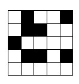
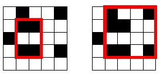

Counting subgrids
As another example, consider the following problem: Given an n x n grid whose
each square is either black (1) or white (0), calculate the number of subgrids
whose all corners are black. For example, the grid

contains two such subgrids:

There is an O(n3 ) time algorithm for solving the problem: go through all
O(n2) pairs of rows and for each pair (a,b) calculate the number of columns
that
contain a black square in both rows in O(n) time. The following code assumes
that color[y][x] denotes the color in row y and column x:
int count = 0;
for(int i = 0; i < n; i++) {
if(color[a][i] == 1 && color[b][i] == 1) count++;
}
for(int i = 0; i < n; i++) {
if(color[a][i] == 1 && color[b][i] == 1) count++;
}
Then, those columns account for count(count‒1)/2 subgrids with black corners,
because we can choose any two of them to form a subgrid.
To optimize this algorithm, we divide the grid into blocks of columns such that
each block consists of N consecutive columns. Then, each row is stored as a list
of N-bit numbers that describe the colors of the squares. Now we can process N
columns at the same time using bit operations. In the following code, color[y][k]
represents a block of N colors as bits.
int count = 0;
for(int i = 0; i <= n/N; i++) {
count += __builtin_popcount(color[a][i]&color[b][i]);
}
The resulting algorithm works in O(n3/N) time.
for(int i = 0; i <= n/N; i++) {
count += __builtin_popcount(color[a][i]&color[b][i]);
}
We generated a random grid of size 2500 x 2500 and compared the original
and bit optimized implementation. While the original code took 29.6 seconds, the
bit optimized version only took 3.1 seconds with N = 32 (int numbers) and 1.7
seconds with N = 64 (long long numbers).